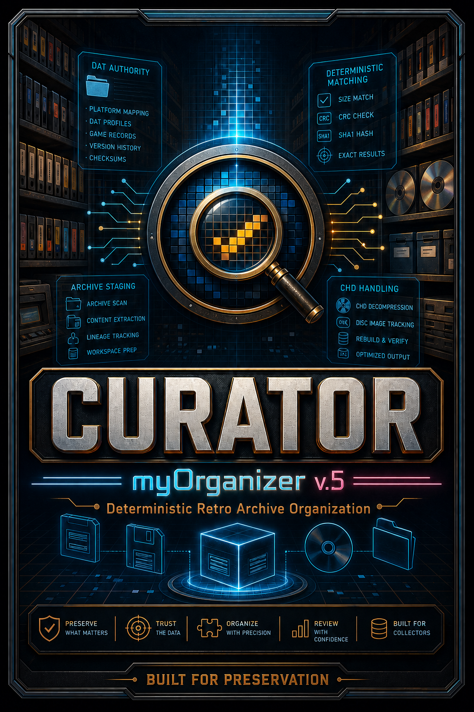
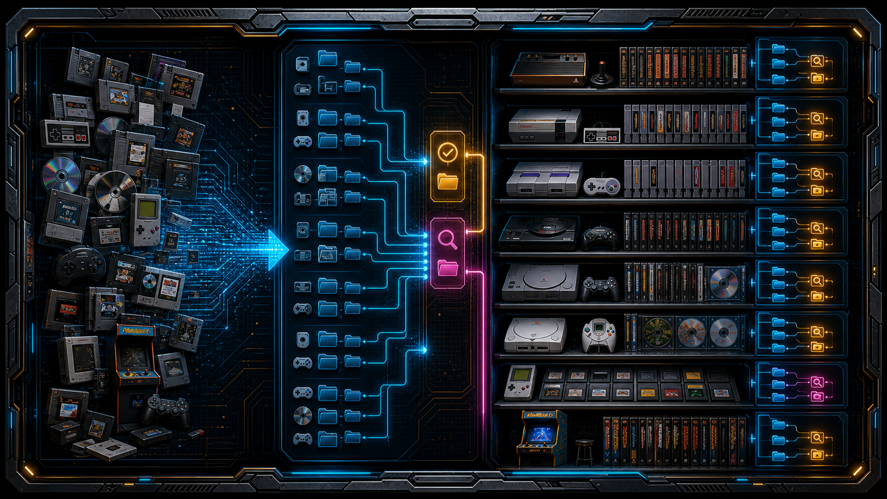

1. Authority Preparation
CURATOR prepares preservation DATs and supporting reference metadata before any collection work begins, establishing a trusted foundation for deterministic processing.

CURATOR is an authoritative platform for building reproducible retro game collections using preservation DATs as the source of truth—not just another ROM manager.
Starting with user-provided source files, CURATOR prepares, validates, documents, and organizes every asset using trusted preservation metadata. Unknown, incomplete, and unsupported content is identified and separated so every decision remains transparent.
The result is a clean collection with a complete audit trail, making it easy to review, maintain, and update as preservation projects continue to evolve.
CURATOR transforms imperfect source material into a reproducible, preservation-ready collection through a deterministic workflow.
CURATOR prepares preservation DATs and supporting reference metadata before any collection work begins, establishing a trusted foundation for deterministic processing.

Every user-provided file is evaluated against trusted preservation metadata to identify known content, separate unknown material, and eliminate guesswork.

Verified content is organized into a structured, LaunchBox-ready library while preserving the relationship between source material, authority metadata, and final output.
Every action is documented, allowing collections to be reviewed, reproduced, reconciled, and updated as preservation projects continue to evolve.
CURATOR is being prepared for public release as free, open-source software under the GNU General Public License v3.0 or later.
Source code, documentation, and release packages will be published when the project is ready.
Questions, feedback, bug reports, and project discussions are welcome.
Email: contact@myorganizerhq.com
GitHub: myOrganizer-CURATOR